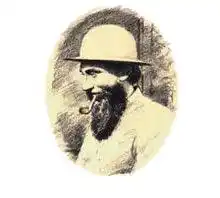
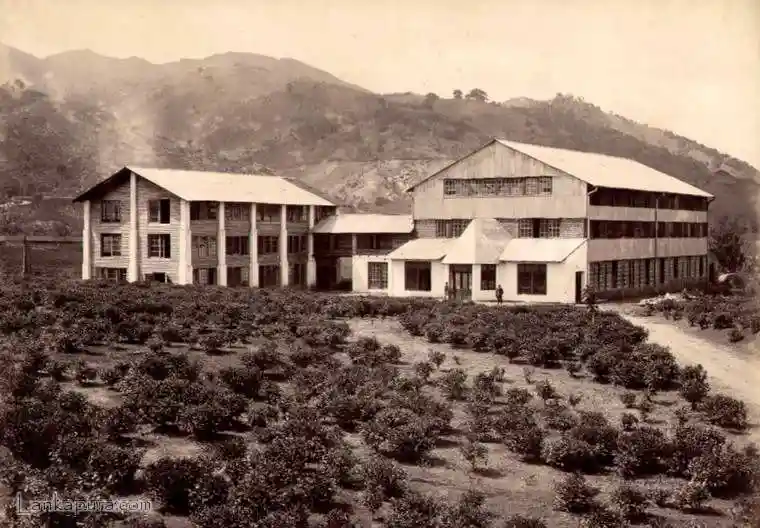
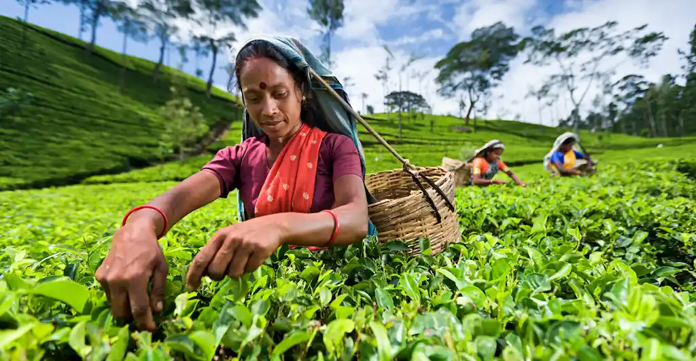

History
The establishment of tea plantation in Sri Lanka began in the 1867 by James Taylor who arrived in Ceylon (Sri Lanka) in 1852. He started the tea plantation in Loolecondera Estate with a 19-acre land and in 1872 he successfully opened the tea factory and started operating. In the following year 1873 Ceylon entered the international tea market where 23 pounds of tea which was produced by James Taylor was being exported to London.
During the early 1880s, the tea manufacturing in Ceylon started growing rapidly where tea planters from the hill countryside started visiting Loolecondera to learn the way of producing tea. And in the late 1880s, every coffee plantation in Ceylon started to manufacture tea more than coffee and even converting their total production system to tea.
Growth
With the evolution and development of technologies like the Sirocco tea dryer, which was invented in 1877, and the tea-rolling machine which was in use since 1880 made it capable and easier for the tea manufacturers in Ceylon to effectively and efficiently manufacture tea.
Later on in 1884 the Central Tea Factory of Ceylon was built in Nuwara Eliya, in the estate of the Fairyland (Pedro). And therefore the production continued and in 1891, Ceylon Tea was sold in the auctions in London and the prices for the Tea went around LKR 36.15 per lb.
Production Process
- The first and basic trick is the quality of plucking the chosen leaves in order to ensure the superiority of the final product.
- The chosen leaves are brought into the factory for the drying process, which ensures the flavor of the leaves.
- After the drying process the leaves enter the rolling stage where their cell structures are broken and enhances them with more natural essence.
- Next is the fermentation stage, the oxidation process where the leaves enter the air and are kept till it turns brown in colour. And then passes through fire chamber to engage them with more of the flavor’s.
- And finally the tea is sized, weighted and graded before being packed and delivered, and brings you home a wonderful delicious cup of tea.
Regions the Tea Serves
- Kandy
- Nuwara Eliya
- Dumbulu
- UVA
- Ruhuna
- Sabaragamuwa
- Uda Pessellawa